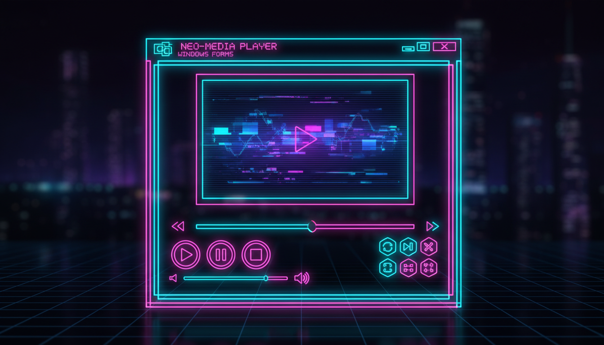

Відтворення аудіо/відео, керування, таймлайн

public ref class MediaPlayerForm : public Form {
private:
// Windows Media Player
AxWMPLib::AxWindowsMediaPlayer^ player;
TrackBar^ timeline;
Timer^ updateTimer;
Button^ btnPlay, ^btnPause, ^btnStop;
Label^ lblTime;
bool isSeeking = false;
public:
MediaPlayerForm() {
this->Text = "Медіа-плеєр";
this->Size = Size(700, 500);
// WMP
player = gcnew AxWMPLib::AxWindowsMediaPlayer();
player->Dock = DockStyle::Top;
player->Height = 380;
this->Controls->Add(player);
// Панель керування
Panel^ panel = gcnew Panel();
panel->Dock = DockStyle::Bottom;
panel->Height = 80;
btnPlay = gcnew Button(); btnPlay->Text = "▶";
btnPause = gcnew Button(); btnPause->Text = "⏸";
btnStop = gcnew Button(); btnStop->Text = "⏹";
Button^ btnOpen = gcnew Button(); btnOpen->Text = "📂";
timeline = gcnew TrackBar();
timeline->Width = 400;
timeline->TickFrequency = 10;
lblTime = gcnew Label();
lblTime->Text = "00:00 / 00:00";
panel->Controls->Add(btnOpen);
panel->Controls->Add(btnPlay);
panel->Controls->Add(btnPause);
panel->Controls->Add(btnStop);
panel->Controls->Add(timeline);
panel->Controls->Add(lblTime);
this->Controls->Add(panel);
// Обробники
btnOpen->Click += gcnew EventHandler(this, &MediaPlayerForm::OnOpen);
btnPlay->Click += gcnew EventHandler(this, &MediaPlayerForm::OnPlay);
btnPause->Click += gcnew EventHandler(this, &MediaPlayerForm::OnPause);
btnStop->Click += gcnew EventHandler(this, &MediaPlayerForm::OnStop);
// Таймер оновлення
updateTimer = gcnew Timer();
updateTimer->Interval = 500;
updateTimer->Tick += gcnew EventHandler(
this, &MediaPlayerForm::OnTimerTick);
}
void OnOpen(Object^ s, EventArgs^ e) {
OpenFileDialog^ dlg = gcnew OpenFileDialog();
dlg->Filter = "Медіа|*.mp3;*.mp4;*.avi;*.wav|Всі|*.*";
if (dlg->ShowDialog() == DialogResult::OK) {
player->URL = dlg->FileName;
player->Ctlcontrols->play();
updateTimer->Start();
}
}
void OnTimerTick(Object^ s, EventArgs^ e) {
if (player->currentMedia != nullptr) {
double current = player->Ctlcontrols->currentPosition;
double total = player->currentMedia->duration;
if (total > 0) {
timeline->Maximum = (int)total;
timeline->Value = (int)current;
lblTime->Text = String::Format("{0:D2}:{1:D2} / {2:D2}:{3:D2}",
(int)current/60, (int)current%60,
(int)total/60, (int)total%60);
}
}
}
void OnPlay(Object^ s, EventArgs^ e) { player->Ctlcontrols->play(); }
void OnPause(Object^ s, EventArgs^ e) { player->Ctlcontrols->pause(); }
void OnStop(Object^ s, EventArgs^ e) { player->Ctlcontrols->stop(); }
};